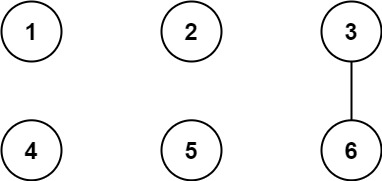
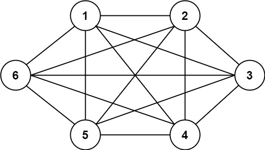
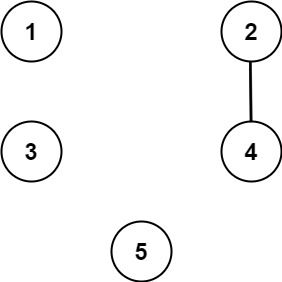

| Category | Difficulty | Likes | Dislikes |
|---|---|---|---|
| Algorithms | Hard | 605 | 34 |
array | math | union-find | number-theory
uber
We have n cities labeled from 1 to n. Two different cities with labels x and y are directly connected by a bidirectional road if and only if x and y share a common divisor strictly greater than some threshold. More formally, cities with labels x and y have a road between them if there exists an integer z such that all of the following are true:
x % z == 0,y % z == 0, andz > threshold.Given the two integers, n and threshold, and an array of queries, you must determine for each queries[i] = [ai, bi] if cities ai and bi are connected directly or indirectly. (i.e. there is some path between them).
Return an array answer, where answer.length == queries.length and answer[i] is true if for the ith query, there is a path between ai and bi, or answer[i] is false if there is no path.
Example 1:

Input: n = 6, threshold = 2, queries = [[1,4],[2,5],[3,6]]
Output: [false,false,true]
Explanation: The divisors for each number:
1: 1
2: 1, 2
3: 1, 3
4: 1, 2, 4
5: 1, 5
6: 1, 2, 3, 6
Using the underlined divisors above the threshold, only cities 3 and 6 share a common divisor, so they are the
only ones directly connected. The result of each query:
[1,4] 1 is not connected to 4
[2,5] 2 is not connected to 5
[3,6] 3 is connected to 6 through path 3--6Example 2:

Input: n = 6, threshold = 0, queries = [[4,5],[3,4],[3,2],[2,6],[1,3]]
Output: [true,true,true,true,true]
Explanation: The divisors for each number are the same as the previous example. However, since the threshold is 0,
all divisors can be used. Since all numbers share 1 as a divisor, all cities are connected.Example 3:

Input: n = 5, threshold = 1, queries = [[4,5],[4,5],[3,2],[2,3],[3,4]]
Output: [false,false,false,false,false]
Explanation: Only cities 2 and 4 share a common divisor 2 which is strictly greater than the threshold 1, so they are the only ones directly connected.
Please notice that there can be multiple queries for the same pair of nodes [x, y], and that the query [x, y] is equivalent to the query [y, x].
Constraints:
2 <= n <= 1040 <= threshold <= n1 <= queries.length <= 105queries[i].length == 21 <= ai, bi <= citiesai != bi